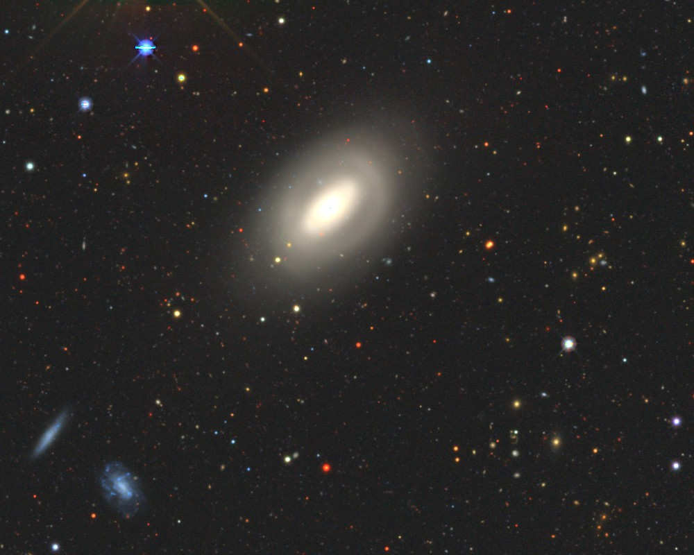
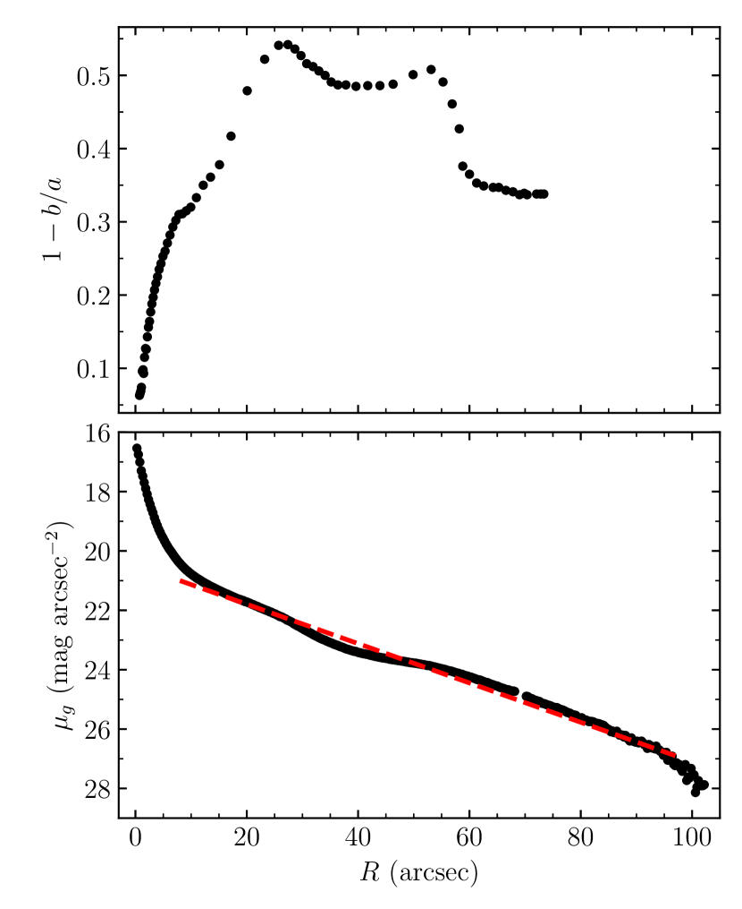
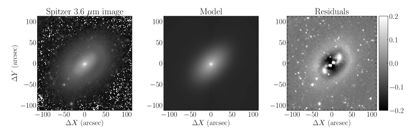
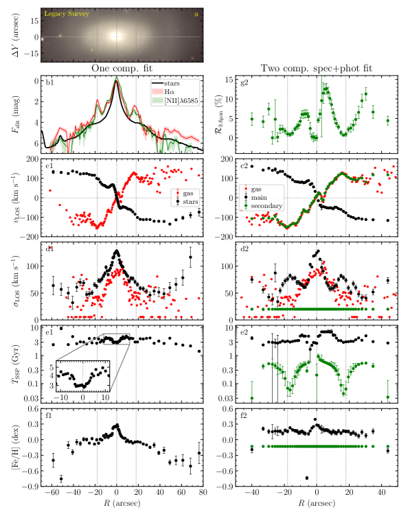
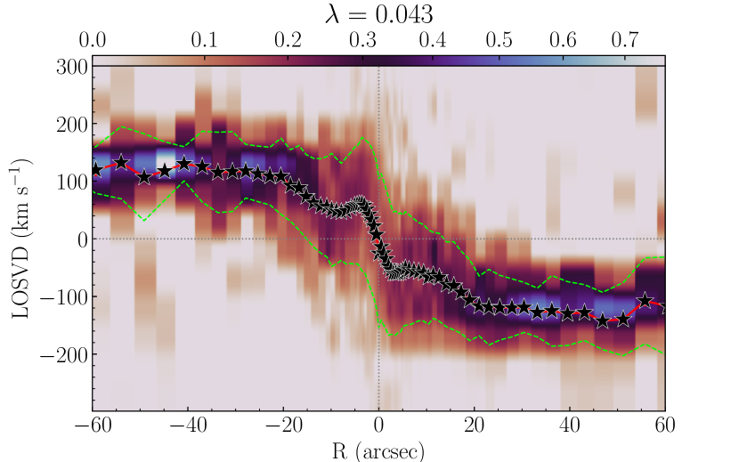
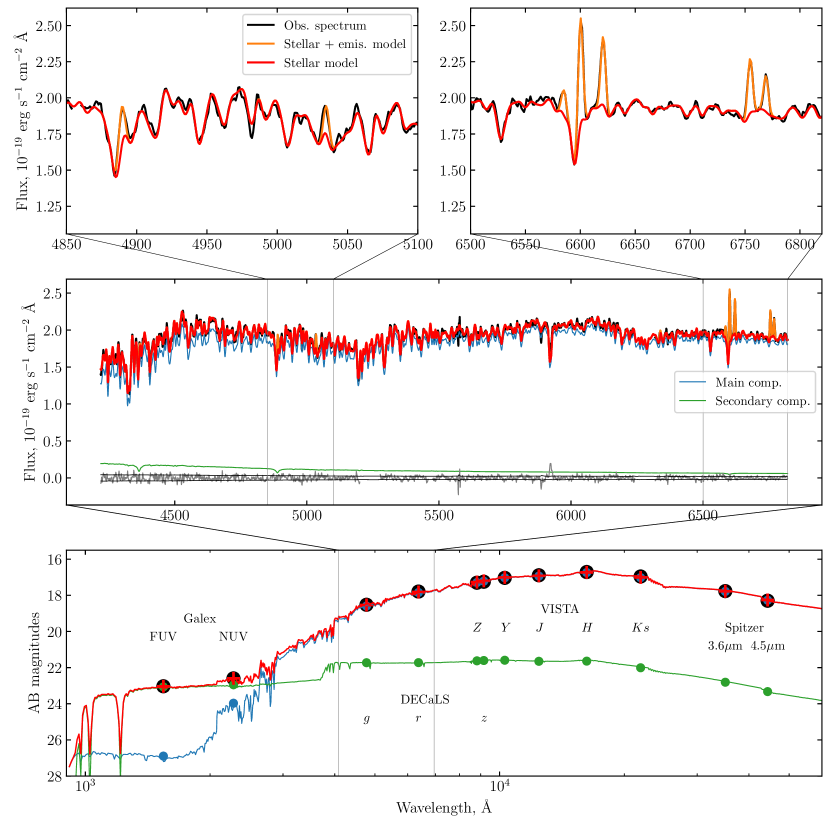
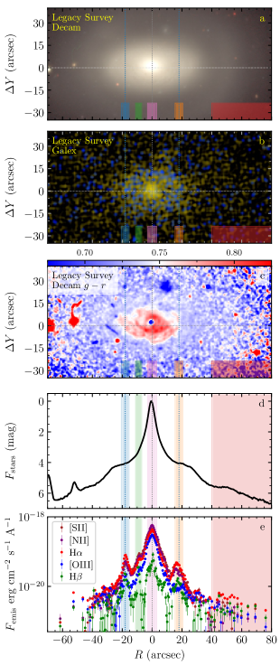
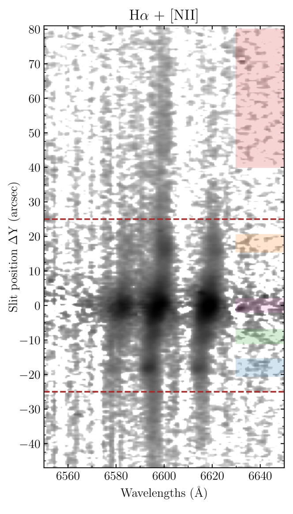
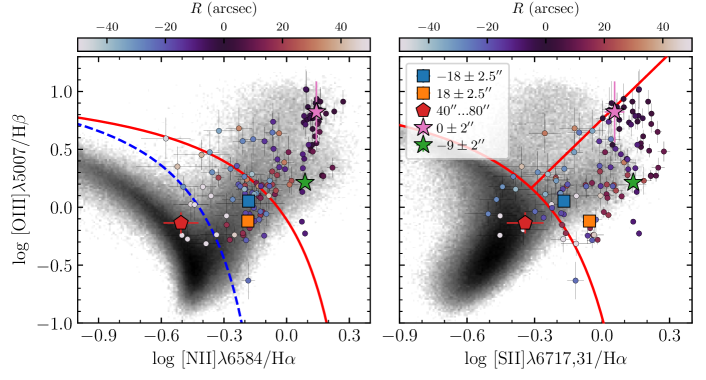

تشكل النجوم في الحلقات الخارجية للمجرات S0.
الملخص
Aims. على الرغم من أن مجرات S0 تُعد عادة «حمراء وخاملة»، فإنها كثيرا ما تُظهر تشكل نجوم منظما في بنى حلقية. نهدف إلى توضيح طبيعة هذه الظاهرة وكيف تختلف عن تشكل النجوم في المجرات الحلزونية.
Methods. درسنا المجرة S0 القريبة ومتوسطة اللمعان NGC 254 باستعمال مطيافية الشق الطويل المأخوذة بتلسكوب جنوب أفريقيا الكبير وبيانات تصويرية متاحة للعامة. وباستخدام ملاءمة طيفية كاملة، حللنا حركيات الغاز والنجوم، وكذلك إثارة الغاز المتأين ومعدنيته، وخصائص الجمهرة النجمية المحلولة شعاعيا. وقد أتاح لنا نهج متقدم يلائم الأطياف والبيانات الضوئية في آن واحد تكميم كسر النجوم المخفية ذات الدوران المعاكس في هذه المجرة.
Results. نجد أن الغاز المتأين يدور عكس دوران النجوم في كامل قرص NGC 254، مما يشير إلى أصل خارجي للغاز. ونرى أن اندماج مجرة غنية بالغاز من مدار تراجعي هو المصدر الرئيس للمادة ذات الدوران المعاكس. يحدث تشكل النجوم المغذى بهذا الغاز المعاكس الدوران ضمن حلقتين: حلقة خارجية عند وحلقة داخلية عند . ومعدل تشكل النجوم ضعيف، إذ يبلغ إجمالا 0.02 كتلة شمسية في السنة، كما أن معدنية الغاز أدنى قليلا من الشمسية. وقدرنا أن تراكم الغاز حدث قبل نحو 1 Gyr، وأن نحو 1% من جميع النجوم تشكلت موضعيا من الغاز ذي الدوران المعاكس.
Key Words.:
المجرات: البنية – المجرات: التطور – المجرات، الإهليلجية والعدسية – المجرات: تشكل النجوم1 مقدمة
أدخلت Hubble (1936) المجرات العدسية – وهي مجرات قرصية بلا أذرع حلزونية – بوصفها نوعا انتقاليا بين المجرات الإهليلجية والحلزونية. ولا يزال أصلها غير واضح؛ وعلى وجه الخصوص، ليس مفهوما لماذا تفتقر أعداد كبيرة من مجرات S0 إلى تشكل نجمي ملحوظ مع أنها تمتلك كمية معتبرة من الغاز البارد (Pogge & Eskridge 1993). كذلك، وخلافا للحلزونات، تُظهر العدسيات غالبا دورانا غازيا منفصلا عن دوران مكونها النجمي (Bertola et al. 1992; Kuijken et al. 1996)، ولا سيما في البيئات قليلة الكثافة (Davis et al. 2011; Katkov et al. 2014)؛ وربما قد تسبب هذه الظاهرة كبح تشكل النجوم (Sil’chenko et al. 2019).
السمة التي تميز S0 كنوع مورفولوجي هي وجود حلقة نجمية واسعة النطاق داخل بنيتها القرصية (de Vaucouleurs 1959). ففي نصف مجرات S0 الحلقية تكون الحلقة الخارجية ساطعة في الأشعة فوق البنفسجية (Gil de Paz et al. 2007; Kostiuk & Sil’chenko 2015)، كاشفة عن تشكل نجمي حديث؛ وبوجه عام، إذا كانت مجرة S0 الغنية بالغاز تشهد تشكلا نجميا حاليا، فإنه يكون منظما عادة في بنى شبيهة بالحلقات (Salim et al. 2012). وقد لاحظنا سابقا أن مواضع حلقات تشكل النجوم في مجرات S0 تتوافق مع نصف القطر الذي يستقر عنده الغاز المتراكم في المستوى المجري الرئيس (Sil’chenko et al. 2019). وقد أثبت المثال الواضح NGC 2551 أنه عندما كان الغاز محصورا في مستوى القرص النجمي، كوّن نجوما حتى مع كونه معاكس الدوران بالنسبة إلى النجوم. وفي هذه الورقة، نقدم مجرة S0 أخرى ذات حلقات تشكل نجوم نشأت من غاز معاكس الدوران، وهي NGC 254.
إنها مجرة قريبة ( Mpc, Tully & Fisher 1988) مصنفة على أنها (R)SA(rl) في قاعدة بيانات NASA للمجرات خارج المجرة (NED)
وعلى أنها S0/a ذات قضيب وحلقة في قاعدة بيانات Lyon-Meudon للمجرات خارج المجرة (HyperLEDA). وهي مجرة متوسطة اللمعان ( اعتمادا على بيانات HyperLEDA إذا صُححت إلى مسافة 17.1 Mpc). أما من حيث
البيئات، فتُنسب NGC 254 رسميا إلى مجموعة NGC 134 (de Vaucouleurs 1975)، لكن توجد مسافة مقدارها 1.5 Mpc
من NGC 254 إلى مركز هذه المجموعة، والمجرة اللامعة الوحيدة في جوار NGC 254 هي NGC 289 المتأخرة النمط،
على بعد 400 kpc، أي خارج أي تأثير مدي ثقالي. ومع ذلك، يمكن رؤية بعض التوابع غير المنتظمة الصغيرة قريبا منها
(الشكل 1). تُعد NGC 254 مجرة S0 غنية نسبيا بالغاز، بكتلة HI مقدارها  (Bottinelli et al. 1980)، أو نحو 1–3 في المئة نسبة إلى الكتلة النجمية الكلية. وقد لاحظ Caldwell et al. (1994) نحو دزينة من مناطق HII في الحلقة الداخلية لـ NGC 254، ومن ثم كانت حالة لمجرة S0 غنية بالغاز وتشكل النجوم.
وأدرج Buta (1995) المجرة NGC 254 في كتالوجه للمجرات الجنوبية الحلقية، مع تقديرات لنصف قطر المحور الأكبر للحلقة النجمية الخارجية قدرها ولنصف قطر المحور الأكبر للحلقة النجمية الداخلية قدرها . وفي هذا
الكتالوج، وُصفت المجرة بأنها غير قضيبية: «مجرة حلقية SA حقيقية وجميلة» (Buta 1995). وعلى الرغم من الرأي الشائع بأن الحلقات في المجرات القرصية ظواهر مرتبطة برنينات القضبان (Athanassoula et al. 1982)، فقد احتوى كتالوج Buta (1995) على كثير من مجرات S0 الحلقية دون قضبان واضحة. وفي الإحصاءات الحديثة التي قدمها Díaz-García et al. (2019)، صُنّف نحو ربع جميع المجرات الحلقية على أنها غير قضيبية. والتفسير المحتمل هو أن القضبان القوية قد تتدمر تاركة وراءها عدسات بيضوية ضعيفة في مراكز مجرات S0. وقد درس Ronald Buta بعض هذه المجرات بالتفصيل. وكما نُبيّن أدناه، فإن NGC 254 تشبه مورفولوجيا مجرات أخرى غير قضيبية ومزدوجة الحلقات، مثل NGC 7187 (Buta 1990) وNGC 7702 (Buta 1991)، وهي تتميز بحلقة داخلية زرقاء حادة وحلقة خارجية حمراء منتشرة.
(Bottinelli et al. 1980)، أو نحو 1–3 في المئة نسبة إلى الكتلة النجمية الكلية. وقد لاحظ Caldwell et al. (1994) نحو دزينة من مناطق HII في الحلقة الداخلية لـ NGC 254، ومن ثم كانت حالة لمجرة S0 غنية بالغاز وتشكل النجوم.
وأدرج Buta (1995) المجرة NGC 254 في كتالوجه للمجرات الجنوبية الحلقية، مع تقديرات لنصف قطر المحور الأكبر للحلقة النجمية الخارجية قدرها ولنصف قطر المحور الأكبر للحلقة النجمية الداخلية قدرها . وفي هذا
الكتالوج، وُصفت المجرة بأنها غير قضيبية: «مجرة حلقية SA حقيقية وجميلة» (Buta 1995). وعلى الرغم من الرأي الشائع بأن الحلقات في المجرات القرصية ظواهر مرتبطة برنينات القضبان (Athanassoula et al. 1982)، فقد احتوى كتالوج Buta (1995) على كثير من مجرات S0 الحلقية دون قضبان واضحة. وفي الإحصاءات الحديثة التي قدمها Díaz-García et al. (2019)، صُنّف نحو ربع جميع المجرات الحلقية على أنها غير قضيبية. والتفسير المحتمل هو أن القضبان القوية قد تتدمر تاركة وراءها عدسات بيضوية ضعيفة في مراكز مجرات S0. وقد درس Ronald Buta بعض هذه المجرات بالتفصيل. وكما نُبيّن أدناه، فإن NGC 254 تشبه مورفولوجيا مجرات أخرى غير قضيبية ومزدوجة الحلقات، مثل NGC 7187 (Buta 1990) وNGC 7702 (Buta 1991)، وهي تتميز بحلقة داخلية زرقاء حادة وحلقة خارجية حمراء منتشرة.

2 بنية NGC 254
على الرغم من الانتظام الظاهري، صُنفت المجرة بطرائق شديدة الاختلاف في دراسات عديدة.
ومن بين المسوح الضوئية الكبيرة التي شملت NGC 254، يمكننا الإشارة إلى مسح Carnegie-Irwin (Ho et al. 2011) ومسح Spitzer للبنية النجمية في المجرات (S4G) (Sheth et al. 2010).
غطى الأول النطاقات البصرية والقريبة من تحت الحمراء (NIR)، من  إلى
إلى  ، بينما اعتمد الثاني على بيانات تلسكوب Spitzer الفضائي واستكشف نطاقات NIR عند 3.6
، بينما اعتمد الثاني على بيانات تلسكوب Spitzer الفضائي واستكشف نطاقات NIR عند 3.6  m و4.5
m و4.5  m. ويختلف النوع المورفولوجي لـ NGC 254 المستخلص من هذه المسوح،
وكذلك المدرج في قواعد بيانات المجرات خارج المجرة، اختلافا جذريا: فوفقا لـ NED وCarnegie-Irwin وButa (1995)، فإن NGC 254
غير قضيبية، (R)SA(rl)
m. ويختلف النوع المورفولوجي لـ NGC 254 المستخلص من هذه المسوح،
وكذلك المدرج في قواعد بيانات المجرات خارج المجرة، اختلافا جذريا: فوفقا لـ NED وCarnegie-Irwin وButa (1995)، فإن NGC 254
غير قضيبية، (R)SA(rl) ، في حين ينسب HyperLEDA وS4G إليها وجود قضيب كبير. وجد Buta (1995) حلقتين نجميتين
في NGC 254 عند و. أما Herrera-Endoqui et al. (2015)، عند تحليل بيانات S4G، فقد وجد قضيبا نصف محوره الأكبر 27.3″ وعدسة داخلية نصف محورها الأكبر 30″. وليس واضحا أي الوصفين هو الصحيح.
، في حين ينسب HyperLEDA وS4G إليها وجود قضيب كبير. وجد Buta (1995) حلقتين نجميتين
في NGC 254 عند و. أما Herrera-Endoqui et al. (2015)، عند تحليل بيانات S4G، فقد وجد قضيبا نصف محوره الأكبر 27.3″ وعدسة داخلية نصف محورها الأكبر 30″. وليس واضحا أي الوصفين هو الصحيح.

 الملاءم بقانون أسي عبر كامل المنطقة التي يهيمن عليها القرص. لا تُعرض أشرطة الخطأ لأنها أصغر من حجم الرموز.
الملاءم بقانون أسي عبر كامل المنطقة التي يهيمن عليها القرص. لا تُعرض أشرطة الخطأ لأنها أصغر من حجم الرموز.
 m للمجرة NGC 254. من اليسار إلى اليمين: صورة المجرة، والنموذج، والبواقي. نلاحظ أن صورة المجرة والنموذج معروضان بمقياس لوغاريتمي، أما البواقي فمعطاة بمقياس خطي.
m للمجرة NGC 254. من اليسار إلى اليمين: صورة المجرة، والنموذج، والبواقي. نلاحظ أن صورة المجرة والنموذج معروضان بمقياس لوغاريتمي، أما البواقي فمعطاة بمقياس خطي.فحصنا بيانات ضوئية جديدة متاحة في مسح The Dark Energy Camera Legacy Survey (DECaLS, Dey et al. 2019).
استرجعنا صورة النطاق  من موقع Legacy Survey11
1
www.legacysurvey.org وبنينا مقاطع السطوع السطحي المتوسط سمتيًا وإهليلجية الإيزوفوتات الشعاعية المبينة في الشكل 2.
ولا يُعرض مقطع زاوية موضع المحور الأكبر لأنه يبقى ثابتا؛ فالانحراف الأقصى عن خط العقد يقع ضمن ثلاث درجات ويُرصد فقط عند أنصاف أقطار الحلقات. لذلك، فإن التوقيع المورفولوجي الوحيد الممكن
لقضيب هو الإهليلجية المرتفعة للإيزوفوتات بين و. غير أن القمتين المحليتين في
إهليلجية الإيزوفوتات تقابلان موضعي الحلقتين، عند و، ولا تقابلان نهاية القضيب.
وبما أن الحركيات النجمية في القسم التالي تكشف أثر القضيب، كما سنبين أدناه، نستنتج أن NGC 254 مجرة
غير قضيبية على الرغم من وجود حلقتين بنسبة أنصاف أقطار بين 2.2 و2.6، وهي النسبة التي تتنبأ بها نماذج مواضع الحلقات قرب الرنين فائق التوافقية ورنين Lindblad الخارجي لقضيب (Díaz-García et al. 2019). وفي الواقع، لا يوجد فرق رصدي بين
نسبة أنصاف أقطار الحلقات في المجرات القضيبية وغير القضيبية (Díaz-García et al. 2019). علاوة على ذلك، تبدو تصنيفات مقاطع الأقراص
التي قدمها Laine et al. (2016)، Type II(R)، موضع شك لأن مقطع النطاق
من موقع Legacy Survey11
1
www.legacysurvey.org وبنينا مقاطع السطوع السطحي المتوسط سمتيًا وإهليلجية الإيزوفوتات الشعاعية المبينة في الشكل 2.
ولا يُعرض مقطع زاوية موضع المحور الأكبر لأنه يبقى ثابتا؛ فالانحراف الأقصى عن خط العقد يقع ضمن ثلاث درجات ويُرصد فقط عند أنصاف أقطار الحلقات. لذلك، فإن التوقيع المورفولوجي الوحيد الممكن
لقضيب هو الإهليلجية المرتفعة للإيزوفوتات بين و. غير أن القمتين المحليتين في
إهليلجية الإيزوفوتات تقابلان موضعي الحلقتين، عند و، ولا تقابلان نهاية القضيب.
وبما أن الحركيات النجمية في القسم التالي تكشف أثر القضيب، كما سنبين أدناه، نستنتج أن NGC 254 مجرة
غير قضيبية على الرغم من وجود حلقتين بنسبة أنصاف أقطار بين 2.2 و2.6، وهي النسبة التي تتنبأ بها نماذج مواضع الحلقات قرب الرنين فائق التوافقية ورنين Lindblad الخارجي لقضيب (Díaz-García et al. 2019). وفي الواقع، لا يوجد فرق رصدي بين
نسبة أنصاف أقطار الحلقات في المجرات القضيبية وغير القضيبية (Díaz-García et al. 2019). علاوة على ذلك، تبدو تصنيفات مقاطع الأقراص
التي قدمها Laine et al. (2016)، Type II(R)، موضع شك لأن مقطع النطاق  بين و مقسم إلى جزأين، و، يظهران أطوالا أسية متشابهة للقياس وسطوعات سطحية مركزية متقاربة في جزأيه الداخلي والخارجي.
ولذلك يمكن وصف القرص كله بأسي واحد (مقياس شعاعي ″)، كما هو مبين في الشكل 2، مع حلقة نجمية خارجية عريضة جدا ومنتشرة
مرئية بين و.
بين و مقسم إلى جزأين، و، يظهران أطوالا أسية متشابهة للقياس وسطوعات سطحية مركزية متقاربة في جزأيه الداخلي والخارجي.
ولذلك يمكن وصف القرص كله بأسي واحد (مقياس شعاعي ″)، كما هو مبين في الشكل 2، مع حلقة نجمية خارجية عريضة جدا ومنتشرة
مرئية بين و.
أنشأنا أيضا نموذجا ضوئيا ثنائي الأبعاد بتطبيق حزمة galfit (Peng et al. 2002, 2010) على صورة عند 3.6  m لـ NGC 254.
يتضمن النموذج انتفاخا من نوع Sérsic وقرصا أسيا وخلفية السماء.
وتستعمل عملية الملاءمة أيضا دالة انتشار النقطة (PSF) والقناع وصورة اللايقين المقدمة ضمن بيانات مسح S4G.
يعرض الشكل 3 صورة عند 3.6
m لـ NGC 254.
يتضمن النموذج انتفاخا من نوع Sérsic وقرصا أسيا وخلفية السماء.
وتستعمل عملية الملاءمة أيضا دالة انتشار النقطة (PSF) والقناع وصورة اللايقين المقدمة ضمن بيانات مسح S4G.
يعرض الشكل 3 صورة عند 3.6  m، ونموذج الملاءمة الأفضل، وخرائط البواقي.
ويتوافق المقياس الشعاعي للقرص الأسي المنمذج توافقا جيدا جدا مع المقياس المحدد من مقطع السطوع الشعاعي ().
مكون الانتفاخ مدمج جدا، إذ يبلغ نصف القطر الفعال ، وهو يقابل أساسا نواة المجرة.
وتُظهر خريطة البواقي بوضوح الحلقة الخارجية عند وملامح ansae متموجة تشبه تلك الموجودة في المجرة NGC 7078 (انظر الشكل 22 في Buta 2011).
m، ونموذج الملاءمة الأفضل، وخرائط البواقي.
ويتوافق المقياس الشعاعي للقرص الأسي المنمذج توافقا جيدا جدا مع المقياس المحدد من مقطع السطوع الشعاعي ().
مكون الانتفاخ مدمج جدا، إذ يبلغ نصف القطر الفعال ، وهو يقابل أساسا نواة المجرة.
وتُظهر خريطة البواقي بوضوح الحلقة الخارجية عند وملامح ansae متموجة تشبه تلك الموجودة في المجرة NGC 7078 (انظر الشكل 22 في Buta 2011).
كثيرا ما ترتبط القضبان بملامح ansae، ولذلك تُظهر 40% من المجرات القضيبية المبكرة النمط أيضا ملامح ansae (Martinez-Valpuesta et al. 2007). وتبين المحاكاة العددية للمجرات القضيبية أن ملامح ansae تظهر في المرحلة المتأخرة من التطور الديناميكي للقضبان ( Gyr) (Martinez-Valpuesta et al. 2006; Long et al. 2014). وليست القضبان القوية ضرورية لتكون ansae؛ ولدينا مثال NGC 4151 (Martinez-Valpuesta et al. 2007) الذي يمتلك ansae وبنية بيضوية، قد تكون نتاج التطور العلماني للقضيب (Kormendy 1979). ولدينا أيضا مثال لمجرة عدسية، NGC 3998، حيث تظهر ملامح ansae بعد طرح نموذج الانتفاخ من الصورة (Laurikainen et al. 2009). ونميل إلى اعتبار NGC 254 مجرة غير قضيبية؛ غير أنه من الواضح وجود مكون مركزي غير متناظر محوريا قد يكون بنية بيضوية. وجانب مهم هو أن هذه البنية قد تؤدي دورا مهما في تشكل الحلقات عبر الرنينات، وكذلك في نقل المادة إلى مركز المجرة، وهو أمر ضروري لتجدد الجمهرة النجمية المرصود في المركز (انظر اللوحة e1 في الشكل 4) وللنشاط النووي (انظر الشكل 9).
3 نتائج الدراسة الطيفية
3.1 الرصد
أُجريت أرصاد الشق الطويل لـ NGC 254 باستخدام مطياف Robert Stobie (RSS; Burgh et al. 2003; Kobulnicky et al. 2003) في تلسكوب جنوب أفريقيا الكبير (SALT, Buckley et al. 2006; O’Donoghue et al. 2006). أُجريت الأرصاد في 12 يونيو 2018 و12 أغسطس 2018 بتعريضات مقدارها ثانية في كل تاريخ، فكان زمن التعريض الكلي 80 دقيقة. استُخدم شق بعرض 1.25″ في ظروف رؤية رديئة نسبيا مقدارها . وتمت محاذاة الشق مع المحور الأكبر للإيزوفوتات عند زاوية موضع . استُخدمت الشبكة PG900 لتغطية المجال الطيفي 4190−7260 Å بتشتت عكسي نهائي قدره Å pixel-1 ودقة طيفية 5 Å (العرض الكامل عند نصف القيمة العظمى؛ FWHM). ومقياس بكسل RSS هو 0.1267″، وطبقنا عامل تجميع مقداره أربعة لإعطاء عينة مكانية نهائية قدرها 0.507″ pixel-1. كان طول الشق نحو 8′، لذلك استُخدمت الأطياف من حواف الشق لطرح خلفية السماء. وأُنجز الاختزال الأولي للأطياف كما وصفه Kniazev et al. (2008). وصححنا أيضا أطياف العلم للضوء المتشتت داخل الجهاز باستخدام النهج نفسه المعروض في Katkov et al. (2019). واستُخدمت أطياف أقواس مرجعية لتتبع الدقة الآلية بوصفها دالة في الطول الموجي، وهو عنصر ضروري في نمذجة الأطياف.
3.2 الملاءمة الطيفية
لتحديد خصائص الجمهرة النجمية ومعاملات خطوط الانبعاث، طبقنا شيفرة الملاءمة الطيفية الكاملة NBursts (Chilingarian et al. 2007a, b).
لاءمنا الأطياف المرصودة بنماذج جمهرة نجمية بسيطة (SSP) مبنية بشيفرة التركيب التطوري pegase-hr (Le Borgne et al. 2004) اعتمادا على المكتبة النجمية التجريبية Elodie3.1 (Prugniel et al. 2007).
كل قالب نموذجي هو طيف عالي الدقة مُستوفى من شبكة النماذج لزوج معطى من عمر نجمي ومعدنية، وموسّع بتوزيع غاوسي لسرعات النجوم على خط البصر (LOSVD).
ولتقليل الفرق بين الأطياف المرصودة والقالبية، يتضمن النموذج متصلا حدوديا مضاعفا من الرتبة 19.
ويتضمن النموذج أيضا مجموعة من خطوط الانبعاث القوية (H، H ، [O iii]، [O i]، [N ii]، H
، [O iii]، [O i]، [N ii]، H ، [S ii]) ذات الحركيات الغاوسية نفسها، لكنها منفصلة عن الحركيات النجمية.
وتُحدد تدفقات الخطوط بحل مسألة خطية في كل خطوة ضمن حلقة تصغير لاخطية توفر حلا متسقا.
وتُبنى قوالب خطوط الانبعاث، وكذلك القوالب النجمية، باستخدام الدقة الآلية المعتمدة على الطول الموجي المحددة سابقا.
ويشبه هذا النهج، القائم على الملاءمة المتزامنة للمتصل النجمي وخطوط الانبعاث بحركيات مستقلة، شيفرة gandalf (Sarzi et al. 2017) أو النسخ الحديثة من شيفرة ppxf (Cappellari 2017).
، [S ii]) ذات الحركيات الغاوسية نفسها، لكنها منفصلة عن الحركيات النجمية.
وتُحدد تدفقات الخطوط بحل مسألة خطية في كل خطوة ضمن حلقة تصغير لاخطية توفر حلا متسقا.
وتُبنى قوالب خطوط الانبعاث، وكذلك القوالب النجمية، باستخدام الدقة الآلية المعتمدة على الطول الموجي المحددة سابقا.
ويشبه هذا النهج، القائم على الملاءمة المتزامنة للمتصل النجمي وخطوط الانبعاث بحركيات مستقلة، شيفرة gandalf (Sarzi et al. 2017) أو النسخ الحديثة من شيفرة ppxf (Cappellari 2017).

 و
و و من مسح DECaLS لتجنب مركز مجرة مشبع.
b1) مستوى المتصل النجمي عند 5500
و من مسح DECaLS لتجنب مركز مجرة مشبع.
b1) مستوى المتصل النجمي عند 5500 20Å في إطار السكون على طول الشق (خط أسود) وتدفقات H و[N ii] (خطوط ملونة). ولأغراض الإيضاح، حُولت مقاطع النجوم وخطوط الانبعاث إلى مقادير بافتراض مقدار صفري في المركز.
c1), c2) مقاطع سرعة النجوم والغاز المتأين على خط البصر.
d1), d2) مقاطع تشتت سرعة النجوم والغاز المتأين على خط البصر.
e1), e2) العمر المكافئ لـ SSP.
f1), f2) المعدنية النجمية.
g2) الإسهام النسبي للمكون الثانوي في نطاق 3.6
20Å في إطار السكون على طول الشق (خط أسود) وتدفقات H و[N ii] (خطوط ملونة). ولأغراض الإيضاح، حُولت مقاطع النجوم وخطوط الانبعاث إلى مقادير بافتراض مقدار صفري في المركز.
c1), c2) مقاطع سرعة النجوم والغاز المتأين على خط البصر.
d1), d2) مقاطع تشتت سرعة النجوم والغاز المتأين على خط البصر.
e1), e2) العمر المكافئ لـ SSP.
f1), f2) المعدنية النجمية.
g2) الإسهام النسبي للمكون الثانوي في نطاق 3.6  m.
تُظهر الرموز السوداء والخضراء في اللوحات c2) وd2) وe2) وf2) معاملات المكونين النجميين الرئيس والثانوي في النمذجة الطيفية-الضوئية.
وتمثل الخطوط الرمادية العمودية عند الحلقة الداخلية ذات تشكل النجوم.
m.
تُظهر الرموز السوداء والخضراء في اللوحات c2) وd2) وe2) وf2) معاملات المكونين النجميين الرئيس والثانوي في النمذجة الطيفية-الضوئية.
وتمثل الخطوط الرمادية العمودية عند الحلقة الداخلية ذات تشكل النجوم.وللحصول على مقاطع شعاعية موثوقة للمعاملات النجمية، جمعنا طيف الشق الطويل بحجم صندوق يزداد خطيا، من 1 بكسل في مركز المجرة إلى 20 بكسلات (10″) عند الأطراف، مع التحقق من أن نسبة الإشارة إلى الضجيج (S/N) في المتصل النجمي عند 4600 10Å في كل صندوق أعلى من 10.
أما لمقاطع خطوط الانبعاث، فاستخدمنا مخطط تجميع تكيفيا بسيطا يزيد حجم الصندوق لتحقيق الحد الأدنى المطلوب S/N=10 (التدفق الكلي H+[N ii] بعد طرح المتصل النجمي).
يعرض الشكل 4 (اللوحات في العمود 1) المقاطع الشعاعية الناتجة.
10Å في كل صندوق أعلى من 10.
أما لمقاطع خطوط الانبعاث، فاستخدمنا مخطط تجميع تكيفيا بسيطا يزيد حجم الصندوق لتحقيق الحد الأدنى المطلوب S/N=10 (التدفق الكلي H+[N ii] بعد طرح المتصل النجمي).
يعرض الشكل 4 (اللوحات في العمود 1) المقاطع الشعاعية الناتجة.
أقدم مكونات المجرة هو الانتفاخ، بمتوسط عمر مرجح باللمعان يزيد على 4 Gyr (اللوحة e1 في الشكل 4).
وفي الوقت نفسه، تكون النواة النجمية أصغر عمرا، Gyr، كما أن القرص الخارجي عند ″، بما في ذلك الحلقة الخارجية، أصغر عمرا أيضا من 3 Gyr.
وتكون المعدنية النجمية في الحلقة الداخلية قريبة من القيمة الشمسية، وفي النواة أعلى منها بوضوح (+0.3 dex)، بينما يحتفظ القرص الخارجي بقيمة أدنى بمقدار  3 مرة (اللوحة f1 في الشكل 4).
3 مرة (اللوحة f1 في الشكل 4).
يكشف التوزع الممتد لخطوط الانبعاث على طول الشق بوضوح أن الغاز المتأين يدور عكس دوران النجوم عبر قرص المجرة كله (اللوحة c1 في الشكل 4). وينخفض تشتت السرعة النجمي إلى 50 km s-1، أي دون الدقة الطيفية بكثير، وهو ما يقابل حول ويشير إلى سيادة كاملة للقرص البارد ديناميكيا عند هذه الأنصاف القطرية. وفي مجال ، يُظهر مقطع السرعة النجمي جزءا مسطحا بسعة سرعة أصغر. وقد يرجع ذلك إلى الأثر الديناميكي للبنية البيضوية الشبيهة بالقضيب المصطفة مع خط عقد القرص (Miller & Smith 1979). والاحتمال الآخر هو أننا نرصد تأثيرا صغيرا لمكون نجمي معاكس الدوران، وقد يكون هذا أيضا سبب الزيادة في تشتت السرعة عند .
3.3 البحث عن الدوران النجمي المعاكس
حاولنا الكشف عن بصمات نجوم ذات دوران معاكس بتطبيق نهجين مختلفين.
3.3.1 استعادة LOSVD لا معلمية
أولا، استعدنا LOSVD النجمي بطريقة لا معلمية باستخدام التقنية المطورة والمطبقة لكشف بنية LOSVD ثنائية القمة في المجرات ذات الدوران النجمي المعاكس IC 719 (Katkov et al. 2013) وNGC 448 (Katkov et al. 2016)، وكذلك لاستعادة شكل LOSVD في NGC 7572 بهدف التمييز بين بنية قرصية ثنائية المكون (رقيقة وسميكة) (Kasparova et al. 2020). وفي هذا النهج، يُعد الطيف النجمي للمجرة نتيجة التفاف أفضل طيف نجمي ملائم عُثر عليه بتحليل NBursts مع LOSVD النجمي اللامعلمي. ويُحدد LOSVD النجمي بحل مسألة خطية باستخدام تقنيات الانتظام (انظر التفاصيل في Katkov et al. (2016) وKasparova et al. (2020)). يعرض الشكل 5 LOSVD النجمي المعاد بناؤه الناتج باستخدام انتظام تمهيدي من الرتبة الأولى، أي أننا استخدمنا مؤثر الفرق من الرتبة الأولى عند حل مسألة المربعات الصغرى الخطية بتصغير .

على الرغم من تجارب عديدة بمعاملات الانتظام ومجال الطول الموجي، وجدنا فقط دلائل ضعيفة وهامشية على دوران نجمي معاكس، مختلفة جذريا عما يُرصد في المجرات ذات الدوران النجمي المعاكس NGC 448 وIC 719 وغيرها. توجد بعض البقع الهامشية عند ، km s-1و، km s-1. وفي المنطقة المسطحة ، حيث تعطي ملاءمة NBursts المعلمية باستخدام LOSVD غاوسي سعة سرعة أصغر، يشير النهج اللامعلمي إلى شكل LOSVD غير متناظر. وفعلا، يبين الشكل 5 فائضا في السرعات الموجبة عند وفائضا في السرعات السالبة عند ، في أرباع لوحة LOSVD التي نتوقع فيها رؤية إسهام من النجوم المعاكسة الدوران. ومع ذلك، لا يُظهر LOSVD عند بنية واضحة على هيئة X، وهي بنية تُرصد في المجرات التي تستضيف قرصين نجميين معاكسين للدوران (انظر الشكل 3 في Katkov et al. (2016) والشكل 3 في Katkov et al. (2013)). أحد الاحتمالات هو أن كلا القرصين يملكان تشتت سرعة عاليا، ما يطمس الانخفاض عند السرعة الصفرية. إضافة إلى ذلك، وبسبب أثر الانجراف اللاتناظري، يدور القرص ذو تشتت السرعة العالي ببطء أكبر، مما يجعل فصل بنية LOSVD ثنائية القمة أقل بروزا. وخيار آخر هو إسهام الانتفاخ عند ، لكن تحليلنا ثنائي الأبعاد باستخدام galfit يشير إلى مكون كروي مدمج جدا يصف النواة المجرية بحيث لا يكون ملحوظا عند هذه الأنصاف القطرية. وأخيرا، قد يكون ذلك ببساطة أثرا للبنية القضيبية/البيضوية المذكورة أعلاه.
ما زال لدينا سؤال عن سبب عدم كشف البنية واسعة النطاق ذات الدوران المعاكس (خارج ) بواسطة نهج LOSVD اللامعلمي. قد يكون هذا نتيجة الغياب الفعلي للنجوم ذات الدوران المعاكس أو عدم قابلية هذا النهج للتطبيق على حالة NGC 254. ونظرا إلى بصمات تشكل النجوم الجاري (انظر القسم التالي)، نتوقع رؤية مكون نجمي شاب ذي دوران معاكس. إلا أن التقنية المستكشفة تستخدم قالبا نجميا واحدا فقط لكلا المكونين الحركيين. وبعبارة أخرى، لا تستطيع تقنيتنا اللامعلمية إعادة بناء بنية LOSVD ثنائية القمة إلا إذا كان المكونان يمتلكان معاملات جمهرة نجمية متقاربة وإذا أسهم كلاهما إسهاما معتبرا في الضوء المتكامل. وقد لا يكون هذا هو حال NGC 254.
3.3.2 ملاءمة طيفية-ضوئية ثنائية المكون
قد لا يسهم الكسر المتوقع من النجوم الشابة كثيرا في الطيف البصري، لكنه قد يصبح مصدرا رئيسا للانبعاث فوق البنفسجي (UV).
لذلك، يمكن لتحليل الطيف البصري المقترن ببيانات عريضة النطاق، بما في ذلك بيانات UV، أن يساعد على كشف نجوم شابة ذات دوران معاكس فوق الجمهرة النجمية الأقدم.
استخدمنا نمط NBursts+phot في NBursts حيث تُنمذج الأطياف البصرية وتوزيعات الطاقة الطيفية عريضة النطاق (SED) في وقت واحد (Chilingarian & Katkov 2012; Grishin et al. 2021).
وفي ملاءمتنا الطيفية، استخدمنا نماذج مشابهة لتلك الموصوفة في القسم 3.2، بينما حُسبت النماذج الضوئية بشيفرة PEGASE.2 (Fioc & Rocca-Volmerange 1997) باستخدام مكتبة BaSeL النجمية الاصطناعية منخفضة الدقة (Lejeune et al. 1997).
وأثناء التصغير في نمط NBursts+phot، يكون  الكلي مساويا لمجموع الإسهامين الطيفي والضوئي: .
وفي نمذجتنا، استخدمنا أوزانا متساوية للإسهامات .
الكلي مساويا لمجموع الإسهامين الطيفي والضوئي: .
وفي نمذجتنا، استخدمنا أوزانا متساوية للإسهامات .

جمعنا مجموعة بيانات SED التي تشمل مقاطع فوق بنفسجية  و
و من Galaxy Evolution Explorer (GALEX) مأخوذة من (Bouquin et al. 2018)، وبيانات بصرية من مسح The Dark Energy Camera Legacy Survey (DECaLS)، وصورا من مسح VISTA Kilo-Degree Infrared Galaxy Survey (VIKING) استُرجعت عبر بوابة أرشيف ESO العلمية22
2
http://archive.eso.org/scienceportal/ ، وبيانات Spitzer عند 3.6
من Galaxy Evolution Explorer (GALEX) مأخوذة من (Bouquin et al. 2018)، وبيانات بصرية من مسح The Dark Energy Camera Legacy Survey (DECaLS)، وصورا من مسح VISTA Kilo-Degree Infrared Galaxy Survey (VIKING) استُرجعت عبر بوابة أرشيف ESO العلمية22
2
http://archive.eso.org/scienceportal/ ، وبيانات Spitzer عند 3.6  m و4.5
m و4.5  m من مسح S4G (Sheth et al. 2010) حُمّلت عبر أرشيف NASA/IPAC لعلوم الأشعة تحت الحمراء33
3
https://irsa.ipac.caltech.edu/data/SPITZER/S4G/.
قدرنا مستوى خلفية السماء وطرحناه بتطبيق تقنية قطع
m من مسح S4G (Sheth et al. 2010) حُمّلت عبر أرشيف NASA/IPAC لعلوم الأشعة تحت الحمراء33
3
https://irsa.ipac.caltech.edu/data/SPITZER/S4G/.
قدرنا مستوى خلفية السماء وطرحناه بتطبيق تقنية قطع  44
4
استخدمنا الدالة sigma_clipped_stats() من حزمة astropy.stats: https://docs.astropy.org/en/stable/stats/. على صور VISTA وSpitzer، بينما توفر DECaLS بيانات مطروحة السماء مسبقا.
وباستثناء بيانات GALEX، حيث استخدمنا مقاطع
44
4
استخدمنا الدالة sigma_clipped_stats() من حزمة astropy.stats: https://docs.astropy.org/en/stable/stats/. على صور VISTA وSpitzer، بينما توفر DECaLS بيانات مطروحة السماء مسبقا.
وباستثناء بيانات GALEX، حيث استخدمنا مقاطع  و المتوسطة سمتيًا من Bouquin et al. (2018)، استخرجنا قيما بوحدة AB mag arcsec-2 على طول الشق الطويل، ثم أجرينا التجميع المكاني نفسه لأطياف الشق الطويل والمقاطع الضوئية.
و المتوسطة سمتيًا من Bouquin et al. (2018)، استخرجنا قيما بوحدة AB mag arcsec-2 على طول الشق الطويل، ثم أجرينا التجميع المكاني نفسه لأطياف الشق الطويل والمقاطع الضوئية.
ولتحليل SED، من المهم أخذ الانطفاء الغباري في الحسبان. ففي نمط spec+phot في NBursts، يكون معاملا خارجيا. طبقنا ، المحدد اعتمادا على نمذجة توزيع الطاقة الطيفية الكامل من فوق البنفسجي إلى دون المليمتر في إطار قياسات DustPedia الضوئية وشيفرة cigale (Bianchi et al. 2018; Nersesian et al. 2019). كما أُخذ الانطفاء المجري ، المستمد من NED، في الحسبان.

 من DECaLS.
b) صورة GALEX ملونة استُرجعت باستخدام خدمة القص في Legacy Survey.
c) خريطة ألوان مبنية اعتمادا على بيانات DECaLS.
d) مستوى المتصل النجمي عند 5500
من DECaLS.
b) صورة GALEX ملونة استُرجعت باستخدام خدمة القص في Legacy Survey.
c) خريطة ألوان مبنية اعتمادا على بيانات DECaLS.
d) مستوى المتصل النجمي عند 5500{kind=link}
 20Å في إطار السكون على طول الشق. اختيرت نقطة الصفر بحيث يكون المقدار صفرا عند مركز المجرة.
e) تدفقات خطوط الانبعاث المستعادة من أطياف الشق الطويل.
تُعرض أشرطة لونية للمرجع والمقارنة مع الأشكال الأخرى، وتمثل قمم خطوط الانبعاث عند الحلقة الداخلية ذات تشكل النجوم ، ومنطقة الانبعاث المنتشر الخارجية عند ، والتحسن النووي والانبعاثي في المجرة عند .
20Å في إطار السكون على طول الشق. اختيرت نقطة الصفر بحيث يكون المقدار صفرا عند مركز المجرة.
e) تدفقات خطوط الانبعاث المستعادة من أطياف الشق الطويل.
تُعرض أشرطة لونية للمرجع والمقارنة مع الأشكال الأخرى، وتمثل قمم خطوط الانبعاث عند الحلقة الداخلية ذات تشكل النجوم ، ومنطقة الانبعاث المنتشر الخارجية عند ، والتحسن النووي والانبعاثي في المجرة عند .إن معاملات المكون الثانوي مقيدة على نحو ضعيف بسبب إسهامه الصغير في الطيف البصري. إضافة إلى ذلك، يحتوي طيف الجمهرة النجمية الشابة على سمات امتصاص أقل، مما يضعف أكثر استعادة المعاملات. ومن الصعب تحديد خصائص الجمهرة النجمية، وخصوصا حركيات المكون الثانوي، بالاعتماد على ملاءمة SED فقط. إلا أن الوزن النسبي يمكن تقييده جيدا لأن SED لا يمكن وصفه بمكون SSP واحد. ولتثبيت الحل، افترضنا أن المكون الثانوي يرث حركيات الغاز المتأين؛ لذلك، أثناء الملاءمة تمتلك كل من خطوط الانبعاث والمكون النجمي الثانوي سرعات متطابقة. وثبتنا أيضا تشتت السرعة عند km s-1 والمعدنية النجمية عند -0.13 dex للمكون الثانوي. والدافع إلى القيد الأخير هو معدنية الغاز المتأين المقاسة في الحلقة الداخلية ذات تشكل النجوم، وهي مساوية لهذه القيمة (انظر القسم 3.4). أما جميع معاملات المكون الرئيس والعمر ووزن المكون الثانوي فهي معاملات ملاءمة حرة.
ولتقدير لايقين المعاملات المستخرجة، استخدمنا نمذجة Monte Carlo. ولدنا 10,000 طيف اصطناعي لكل صندوق مكاني بإضافة ضجيج عشوائي، وفقا لمستوى الخطأ في البيانات الأصلية، إلى أفضل نموذج ملائم للطيف وSED. ثم، بتحليل هذه الأطياف المحاكاة بالطريقة نفسها المتبعة مع البيانات الأصلية، حددنا معاملات الخرج التي أتاحت لنا توزيعاتها تقدير اللايقين الإحصائي لمعاملات النموذج. وتُعرض مقاطع المعاملات الناتجة في العمود الثاني من الشكل 4. ويوضح الشكل 6 التحليل الطيفي-الضوئي لصندوق مكاني واحد عند .
أولا، يشير التحليل إلى عمر فتي جدا للمكون الثانوي عند (اللوحة e2 في الشكل 4).
ونبين في القسم 3.4 أننا نرصد في هذه المنطقة تعززا في خطوط الانبعاث سببه تشكل النجوم الجاري.
وتشير الحلقة الزرقاء عند نصف القطر نفسه، المرصودة في صور GALEX فوق البنفسجية (اللوحة b في الشكل 7)، إلى أننا نتعامل مع حلقة ذات تشكل نجمي، على الرغم من استخدام مطيافية الشق الطويل التي لا تستطيع كشف الطبيعة ثنائية الأبعاد لهذه البنية.
ثانيا، نلاحظ أن المكون الثانوي يسهم بنسبة في لمعانية نطاق 3.6 m، أي في الكثافة النجمية، عند (اللوحة g2 في الشكل 4).
وعلى مسافات أقرب وأبعد من ، ازداد الوزن النجمي النسبي للمكون الثانوي إلى .
إلا أن عمره تغير أيضا تغيرا كبيرا من 50 Myr إلى 500 Myr (اللوحة e2 في الشكل 4).
نفسر هذا الأثر بأنه يعني أننا عند نكشف بالتأكيد مكونا نجميا شابا معاكس الدوران، لأنه يتشكل حاليا من غاز يدور عكس دوران القرص النجمي الرئيس.
وخارج هذا نصف القطر، تختفي النجوم الشابة، ونبدأ في كشف جمهرة أقدم بعمر Myr يكون إسهامها في الكثافة النجمية أوضح.
ولا
نستطيع أن نستنتج على نحو قاطع من تحليلنا الطيفي-الضوئي ما إذا كان هذا الجزء من الجمهرة النجمية معاكس الدوران أم لا.
أجرينا ملاءات متعددة تسمح للمكون الثانوي بأن يمتلك سرعة مستقلة غير مرتبطة بالغاز المتأين، لكن التجارب تُظهر تباينا عاليا جدا في سرعة الخرج من صندوق إلى آخر، مما يدل على أن النموذج غير مستقر وأنه لا توجد طريقة لتقييد سرعة المكون الثانوي.
ويفسر هذا السلوك بأن المكون الثانوي يضيع داخل الجمهرة النجمية المهيمنة ويمتلك سمات امتصاص أقل بروزا بسبب عمره الأصغر.
m، أي في الكثافة النجمية، عند (اللوحة g2 في الشكل 4).
وعلى مسافات أقرب وأبعد من ، ازداد الوزن النجمي النسبي للمكون الثانوي إلى .
إلا أن عمره تغير أيضا تغيرا كبيرا من 50 Myr إلى 500 Myr (اللوحة e2 في الشكل 4).
نفسر هذا الأثر بأنه يعني أننا عند نكشف بالتأكيد مكونا نجميا شابا معاكس الدوران، لأنه يتشكل حاليا من غاز يدور عكس دوران القرص النجمي الرئيس.
وخارج هذا نصف القطر، تختفي النجوم الشابة، ونبدأ في كشف جمهرة أقدم بعمر Myr يكون إسهامها في الكثافة النجمية أوضح.
ولا
نستطيع أن نستنتج على نحو قاطع من تحليلنا الطيفي-الضوئي ما إذا كان هذا الجزء من الجمهرة النجمية معاكس الدوران أم لا.
أجرينا ملاءات متعددة تسمح للمكون الثانوي بأن يمتلك سرعة مستقلة غير مرتبطة بالغاز المتأين، لكن التجارب تُظهر تباينا عاليا جدا في سرعة الخرج من صندوق إلى آخر، مما يدل على أن النموذج غير مستقر وأنه لا توجد طريقة لتقييد سرعة المكون الثانوي.
ويفسر هذا السلوك بأن المكون الثانوي يضيع داخل الجمهرة النجمية المهيمنة ويمتلك سمات امتصاص أقل بروزا بسبب عمره الأصغر.
3.4 الغاز المتأين

توجد خطوط انبعاث عبر قرص المجرة كله. ويمكن رؤية ذلك في الشكل 8، حيث نعرض جزءا من أطياف الشق الطويل حول خطوط H+[N ii] بعد تنظيفه من المتصل النجمي. ومن السمات اللافتة لتوزع خطوط الانبعاث وجود لمعانين بارزين متناظرين وشبيهين بالتكتلات عند (انظر أيضا اللوحة e من الشكل 7)، وقد فسرناهما على أنهما بنية حلقة داخلية في خطوط الانبعاث، أقرب بكثير إلى المركز من الحلقة النجمية الداخلية عند وفقا لـ Buta (1995). وتتضمن الحلقة الخارجية أيضا مكونا من خطوط الانبعاث، وإن كان منتشرا جدا، لكنه مرئي بوضوح شمال غرب المركز عند أنصاف أقطار . أما الجزء الجنوبي من الحلقة الخارجية فتلوثه نجمان ساطعان تماما على المحور الأكبر، لذلك لم نتمكن من قياس تدفقات خطوط الانبعاث هناك.

كشفنا آليات إثارة الغاز باستخدام مخطط Baldwin-Phillips-Terlevich القياسي (BPT, Baldwin et al. 1981) وخطوط الفصل التي قدمها Kewley et al. (2001) وKauffmann et al. (2003) (انظر الشكل 9). أولا، نلاحظ أن الإثارة السائدة تتغير بسلاسة على طول نصف القطر من تأين منخفض التأين بفعل النوى المجرية النشطة (AGN) في مركز المجرة (رموز أرجوانية داكنة) إلى تأين بفعل النجوم الشابة في أطراف المجرة (رموز فاتحة). كنا نتوقع رؤية مناطق HII في الحلقة الداخلية الساطعة في UV؛ إلا أن القياسات هناك تقع في المنطقة الانتقالية، مما يدل على إسهام الصدمات في إثارة الغاز. أما الغاز المنتشر في الحلقة الخارجية فيُظهر إثارة نقية بفعل النجوم الشابة.
وهكذا يمكننا تحديد وفرته من الأكسجين باستخدام معايرة الخطوط القوية. استخدمنا معايرتي N2 وO3N2 اللتين اقترحهما Pettini & Pagel (2004) وMarino et al. (2013). وقد أعطى كلا المؤشرين من كلتا الورقتين تقديرات متسقة للحلقة الخارجية: dex. أما للحلقة الداخلية، فاستخدمنا معايرة O3N2 فقط لأنها موثوقة في المنطقة الانتقالية من مخطط BPT (Kumari et al. 2019). وتقدير وفرة الأكسجين في الحلقة الداخلية هو dex. ومن ثم فإن معدنية الغاز المتأين في NGC 254 أدنى قليلا من الشمسية (من -0.2 إلى -0.13 dex بافتراض وفرة شمسية 8.69 من Asplund et al. (2009))، مع تدرج معدنية شعاعي سالب صغير ضمن أخطائنا.
وأثناء فحص طيف يتكون من خطوط الانبعاث فقط، وجدنا أيضا انبعاثا ملحوظا في خطي Na I D الرنينيين المتعادلين (Å،  Å) عند أنصاف أقطار على جانبي مركز المجرة.
وحركيا، لا يختلف هذا الانبعاث عن الخطوط الأخرى، ويُظهر دورانا في الاتجاه المعاكس بالنسبة إلى النجوم.
نادرا ما تُرصد خطوط Na I D في الانبعاث في المجرات، وغالبا ما ترتبط بالطبيعة متعددة الأطوار للغاز الخارج (Rupke & Veilleux 2015; Perna et al. 2019; Rupke et al. 2021) وبظروف تأين ضوئي محددة (Baron et al. 2020).
وتدعم الإثارة من نوع LINER في المركز فكرة نشاط AGN الذي يمكنه دفع تدفقات غازية خارجة.
في المقابل، لم نجد أي دلائل حركية ملحوظة على تدفقات متأينة خارجة، والتي تتجلى عادة في أشكال غير غاوسية لمقاطع خطوط الانبعاث و/أو أجنحة زرقاء قوية لمقاطع خط [O iii]، على وجه الخصوص.
Å) عند أنصاف أقطار على جانبي مركز المجرة.
وحركيا، لا يختلف هذا الانبعاث عن الخطوط الأخرى، ويُظهر دورانا في الاتجاه المعاكس بالنسبة إلى النجوم.
نادرا ما تُرصد خطوط Na I D في الانبعاث في المجرات، وغالبا ما ترتبط بالطبيعة متعددة الأطوار للغاز الخارج (Rupke & Veilleux 2015; Perna et al. 2019; Rupke et al. 2021) وبظروف تأين ضوئي محددة (Baron et al. 2020).
وتدعم الإثارة من نوع LINER في المركز فكرة نشاط AGN الذي يمكنه دفع تدفقات غازية خارجة.
في المقابل، لم نجد أي دلائل حركية ملحوظة على تدفقات متأينة خارجة، والتي تتجلى عادة في أشكال غير غاوسية لمقاطع خطوط الانبعاث و/أو أجنحة زرقاء قوية لمقاطع خط [O iii]، على وجه الخصوص.
4 المناقشة: تشكل النجوم في NGC 254 وطبيعة الحلقات
إن المظهر المورفولوجي اللافت يجعل المجرات الحلقية جذابة للدراسة. ومع ذلك، ليس واضحا مدى اختلاف مسارات التطور بين المجرات الحلقية وغير الحلقية (Fernandez et al. 2021; Elagali et al. 2018). وتساعدنا مجموعة بيانات شاملة وتحليلنا المخصص على بناء صورة متسقة للمجرة مزدوجة الحلقات NGC 254. يمكن أن يُلاحظ من الشكل 1 أن المجرة تمتلك عموما أجزاء خارجية مضطربة، تبدو كتوزع ضوئي غير متناظر شبيه بالأصداف، وقد يكون ذلك ناجما عن تفاعل ثقالي مع التوابع المجاورة أو عن حدث اندماج سابق. وقد تكون التفاعلات نفسها عاملا في تشكل البنى الحلقية في NGC 254 (Tutukov & Fedorova 2016; Eliche-Moral et al. 2011; Mapelli et al. 2015). وثمة عامل آخر قد يكون مسؤولا عن الحلقات، هو جهد غير متناظر محوريا (Buta & Combes 1996). وفي الجزء المركزي من NGC 254، يمكن رؤية بنية من هذا النوع، ويعدها بعض المؤلفين قضيبا (Herrera-Endoqui et al. 2015). إلا أن دراسات أخرى ذهبت إلى أن NGC 254 مجرة غير قضيبية. ونميل إلى اعتبار هذه البنية المركزية غير المتناظرة محوريا عدسة بيضوية قد تكون بقايا التطور الديناميكي لقضيب (Kormendy 1979). وعلى أي حال، فإن وجود هذه البنية غير المتناظرة محوريا يدل على الطبيعة الرنينية للحلقة الداخلية.
يشير تحليلنا لخطوط الانبعاث (انظر القسم 3.4) إلى أن الغاز المتأين يُثار أساسا بفعل النجوم الشابة داخل حلقتي NGC 254، الداخلية والخارجية معا.
وعلى الرغم من تلوث إثارة الغاز بإسهام الصدمات في الحلقة الداخلية، فإن خريطة تدفق UV وتوزيع يقدمان دليلا إضافيا على وجود نجوم شابة هناك.
غير أننا نحتاج إلى الإشارة إلى أن الحلقة الداخلية ذات تشكل النجوم لا تتوافق مع الحلقة النجمية الداخلية، بل تقع أقرب إلى المركز بمقدار 8″ (0.7 kpc).
وتظهر الإزاحة نفسها في الخريطة فوق البنفسجية المبنية على بيانات GALEX (الشكل 7، اللوحة b)؛ كما يكشف المقطع الشعاعي  الذي وجده Bouquin et al. (2018) عن حد أدنى، ، وهو أمر نموذجي للنجوم الشابة عند ، بينما يصبح لون UV عند أكبر بالفعل من 1، وهو نموذجي للجماهر النجمية الأقدم.
وفي الوقت نفسه، تُظهر خريطة الألوان
الذي وجده Bouquin et al. (2018) عن حد أدنى، ، وهو أمر نموذجي للنجوم الشابة عند ، بينما يصبح لون UV عند أكبر بالفعل من 1، وهو نموذجي للجماهر النجمية الأقدم.
وفي الوقت نفسه، تُظهر خريطة الألوان  أن الحلقة النجمية الداخلية عند زرقاء بوضوح، بينما تحتوي حلقة خطوط الانبعاث الداخلية (ذات تشكل النجوم) على ممر غباري أحمر (الشكل 7، اللوحة c). وتشير مثل هذه الترتيبات، بما فيها الصدمات التي يكشف عنها تركيز الغبار ومخطط BPT داخل الحلقة النجمية الداخلية الزرقاء، إلى انجراف سريع لمنطقة تشكل النجوم نحو مركز المجرة.
أن الحلقة النجمية الداخلية عند زرقاء بوضوح، بينما تحتوي حلقة خطوط الانبعاث الداخلية (ذات تشكل النجوم) على ممر غباري أحمر (الشكل 7، اللوحة c). وتشير مثل هذه الترتيبات، بما فيها الصدمات التي يكشف عنها تركيز الغبار ومخطط BPT داخل الحلقة النجمية الداخلية الزرقاء، إلى انجراف سريع لمنطقة تشكل النجوم نحو مركز المجرة.
ومن خلال الجمع بين جميع بياناتنا وبيانات الأدبيات، يمكننا إبداء الملاحظات الآتية بشأن تشكل النجوم الكلي في NGC 254.
إنه جار حاليا في الحلقتين الخارجية والداخلية معا.
وهو ضعيف نسبيا.
وتنشأ النجوم حاليا من الغاز المعاكس الدوران.
وفي الحلقة الداخلية، كشفنا مكونا نجميا شابا يسهم بنسبة  في الكثافة النجمية (انظر القسم 3.3.2).
ننظر الآن في طريقة أخرى لتقدير إسهام النجوم ذات الدوران المعاكس في NGC 254.
فحتى قبل 1 Gyr فقط، كان تشكل النجوم في قرص NGC 254 يجري في الغاز المشترك الدوران لأننا نرى الآن جمهرة نجمية بعمر مرجح باللمعان قدره 2–3 Gyr هناك (الشكل 4) – وهنا استخدمنا العلاقة بين العمر المكافئ لـ SSP وزمن الإخماد من Smith et al. (2009). ومن ثم يمكننا تثبيت حقبة تراكم الغاز المعاكس الدوران عند نحو 0.5–1.0 Gyr مضت. ويبلغ معدل تشكل النجوم الحالي 0.02 في السنة إذا طبقنا معايرة معدل تشكل النجوم من Lee et al. (2009) على تدفق FUV الكلي المسترجع من NED.
ومن المثير للاهتمام أن NGC 4513، التي درسناها سابقا (Proshina et al. 2020) وتمتلك أيضا حلقة غازية معاكسة الدوران، تشهد تشكل نجوم بالمعدل نفسه تماما.
وتحت حد تاريخ تشكل نجمي مسطح (مع أنه لا بد أن يكون متناقصا، Proshina et al. 2019)، نحصل على من النجوم ذات الدوران المعاكس.
وتبلغ الكتلة الكلية للمكونات النجمية الباردة ديناميكيا، القرص
في الكثافة النجمية (انظر القسم 3.3.2).
ننظر الآن في طريقة أخرى لتقدير إسهام النجوم ذات الدوران المعاكس في NGC 254.
فحتى قبل 1 Gyr فقط، كان تشكل النجوم في قرص NGC 254 يجري في الغاز المشترك الدوران لأننا نرى الآن جمهرة نجمية بعمر مرجح باللمعان قدره 2–3 Gyr هناك (الشكل 4) – وهنا استخدمنا العلاقة بين العمر المكافئ لـ SSP وزمن الإخماد من Smith et al. (2009). ومن ثم يمكننا تثبيت حقبة تراكم الغاز المعاكس الدوران عند نحو 0.5–1.0 Gyr مضت. ويبلغ معدل تشكل النجوم الحالي 0.02 في السنة إذا طبقنا معايرة معدل تشكل النجوم من Lee et al. (2009) على تدفق FUV الكلي المسترجع من NED.
ومن المثير للاهتمام أن NGC 4513، التي درسناها سابقا (Proshina et al. 2020) وتمتلك أيضا حلقة غازية معاكسة الدوران، تشهد تشكل نجوم بالمعدل نفسه تماما.
وتحت حد تاريخ تشكل نجمي مسطح (مع أنه لا بد أن يكون متناقصا، Proshina et al. 2019)، نحصل على من النجوم ذات الدوران المعاكس.
وتبلغ الكتلة الكلية للمكونات النجمية الباردة ديناميكيا، القرص القضيب، ، وفقا لـ Laine et al. (2016).
وقد يسهم المكون النجمي ذو الدوران المعاكس بأقل من 1% في الكتلة الكلية للقرص.
ويتفق ذلك جيدا جدا مع تقديرنا المعتمد على التحليل الطيفي-الضوئي ثنائي المكون عند .
القضيب، ، وفقا لـ Laine et al. (2016).
وقد يسهم المكون النجمي ذو الدوران المعاكس بأقل من 1% في الكتلة الكلية للقرص.
ويتفق ذلك جيدا جدا مع تقديرنا المعتمد على التحليل الطيفي-الضوئي ثنائي المكون عند .
يُظهر التحليل للمناطق الواقعة خارج نصف القطر إسهاما أعلى من المكون الثانوي، لكنه ليس شابا بما يكفي لنربطه بثقة بنجوم تكونت حديثا من غاز معاكس الدوران. ويعطي تحليلنا اللامعلمي لـ LOSVD (القسم 3.3) بعض المؤشرات إلى وجود نجوم ذات دوران معاكس عند . ونظرا إلى أننا نرى أيضا زيادة في تشتت السرعة في الجزء الخارجي من المجرة ومورفولوجيا مضطربة في أطراف المجرة، فإننا نميل إلى اعتبار أن NGC 254 شهدت حدث اندماج في الماضي. ومن شأن اندماج تراجعي سابق مع مجرة غنية بالغاز (Thakar & Ryden 1996, 1998) أن يفسر طبيعيا القرص الغازي الواسع النطاق المعاكس الدوران، والمورفولوجيا المضطربة، ودلائل المكونات النجمية المعاكسة الدوران في المنطقة المركزية بوصفها بقايا لجسم نجمي متراكم، والجزء الخارجي المسخن ديناميكيا من القرص. ولا نستطيع استبعاد التراكم التراجعي من الخيوط الكونية بوصفه المصدر الرئيس للغاز المعاكس الدوران تماما (Algorry et al. 2014; Khoperskov et al. 2021)؛ إلا أنه في حالة NGC 254 يبدو أقل احتمالا، لأنه لا يفسر المظهر المورفولوجي المضطرب لـ NGC 254. درس Khoperskov et al. (2021) مجرات ذات دوران نجمي معاكس في محاكاة IllustrisTNG، وبيّنوا كيف يمكن للغاز الموجود في أقراصها أن يُستبدل في البداية بتراكم خارجي من مدارات تراجعية، مصحوبا بتدفق فعال نحو المركز يسبب تجدد الجمهرة النجمية ونشاط AGN. وعلى الرغم من أن تشكل الدوران المعاكس في هذه المحاكاة يعود إلى تراكم الغاز التراجعي من الخيوط الكونية، فإن ديناميكيات اختلاط الغاز وتدفقه إلى الداخل قد تكون مشابهة لحالة اندماج تابع غني بالغاز. وقد ينطبق ذلك على NGC 254، مفسرا التجدد المركزي ونشاط AGN.
قِسنا معدنية الغاز في حلقات NGC 254. وهي dex في الحلقة الداخلية و dex في الحلقة الخارجية. ويتسق ذلك تماما مع نتائجنا المبكرة حول الحلقات الخارجية ذات تشكل النجوم في مجرات S0: ففي Sil’chenko et al. (2019) حصلنا على -0.15 dex لجميع الحلقات الخارجية ذات تشكل النجوم في عينة مجرات S0 لدينا، بغض النظر عن نصف القطر النسبي للحلقة أو لمعان المجرة. ونفسر هذا الانتظام في إطار نماذج التطور الكيميائي الحديثة (مثلا، Ascasibar et al. 2015)، التي تبين أن معدنية الغاز تبلغ هضبة قريبة من القيمة الشمسية بعد وقت قصير جدا من بدء تشكل النجوم عند نصف قطر معين. ويحدث ذلك تحديدا عندما تتجاوز نسبة الكثافة المحلية النجمية إلى الغازية الواحد. وبما أن انفجارات تشكل النجوم الحلقية في مجرات S0 التي راكمت الغاز الخارجي قصيرة، بأزمنة طي أسي قدرها 600 Myr أو أقل (Proshina et al. 2019)، فإننا نلتقي دائما تقريبا بنظامها المشبع من التطور الكيميائي.
5 الاستنتاجات
درسنا مجرة عدسية ذات حلقتين، NGC 254. وقد كشفت مطيافيتنا أن الغاز المتأين يدور عكس دوران النجوم عبر قرص المجرة بأكمله.
إن انبعاث الغاز، المحصور إلى جانب النواة في الحلقتين الداخلية والخارجية، يُثار في معظمه بفعل النجوم الشابة، كما أن وفرة الأكسجين في الغاز، المقدرة عبر معايرات الخطوط القوية، أدنى قليلا من القيمة الشمسية.
ومعدل تشكل النجوم الكلي المقدر من تدفق ، والمرتبط أساسا بالحلقة الداخلية، هو 0.02 كتلة شمسية في السنة.
نقترح سيناريو لتراكم غاز خارجي حديث نسبيا (قبل نحو 1 Gyr) من مدار تراجعي بواسطة مجرة قرصية كانت غنية بالغاز سابقا.
ونتيجة لهذا الحدث، فقد الغاز الأولي المشترك الدوران في المجرة زخمه وسقط إلى المركز، مغذيا تجدد النواة النجمية ونشاط AGN.
كما تشير المورفولوجيا المضطربة قليلا للمجرة إلى أن الاندماج حدث في الماضي.
كوّن الغاز الخارجي المتراكم والمعاكس الدوران حلقتين لتشكل النجوم تسهمان، حتى الآن، بنسبة  في الكثافة النجمية المحلية.
وقد تكون مواضعهما الشعاعية مقيدة برنينات العدسة المركزية البيضوية في NGC 254، التي قد تكون نتيجة اضطراب المجرة بفعل اندماج صغير (Eliche-Moral et al. 2011; Mapelli et al. 2015).
غير أن الانجراف الشعاعي السريع إلى الداخل للحلقة الداخلية ذات تشكل النجوم، الذي وجدناه في بياناتنا الطيفية، يصعب تفسيره في إطار هذا النموذج المقبول على نطاق واسع.
في الكثافة النجمية المحلية.
وقد تكون مواضعهما الشعاعية مقيدة برنينات العدسة المركزية البيضوية في NGC 254، التي قد تكون نتيجة اضطراب المجرة بفعل اندماج صغير (Eliche-Moral et al. 2011; Mapelli et al. 2015).
غير أن الانجراف الشعاعي السريع إلى الداخل للحلقة الداخلية ذات تشكل النجوم، الذي وجدناه في بياناتنا الطيفية، يصعب تفسيره في إطار هذا النموذج المقبول على نطاق واسع.
إضافة إلى ذلك، نود أن نشير إلى أن نهجنا الطيفي-الضوئي المستخدم لتقدير إسهام النجوم ذات الدوران المعاكس يوسع آفاقنا فيما يتعلق بمراجعة تواتر ظواهر الدوران النجمي المعاكس واسعة النطاق، خصوصا في الحلزونات ذات تشكل النجوم الجاري. وقد أظهرت دراسة مبكرة أجراها Pizzella et al. (2004) أن أقل من 12% من عينة المجرات الحلزونية لديهم تُظهر دورانا غازيا معاكسا، بينما كُشف دوران نجمي معاكس في أقل من 8% من العينة. وقد يؤدي تطبيق النهج الطيفي-الضوئي المقترح إلى مساواة هذه التواترات بفضل حساسيته للإسهام الصغير للنجوم حديثة التشكل، خلافا للطرائق القياسية القائمة على كشف LOSVD النجمي، والتي تتطلب مكونا ثانويا أقدم بارزا (Rubino et al. 2021).
Acknowledgements.
نحن ممتنون جدا للمحكّم المجهول على تعليقاته واقتراحاته البنّاءة والمفيدة للغاية التي جعلت ورقتنا أفضل بكثير. كما نشكر Dr. Igor Chilingarian على النقاش المثمر لمسودة الورقة. دُعمت دراسة الحلقات المجرية من المؤسسة الروسية للأبحاث الأساسية، المنحة رقم 18-02-00094a، ومن مؤسسة الأبحاث الوطنية (NRF) في جنوب أفريقيا. ونقر أيضا بالدعم المالي من المدرسة العلمية والتعليمية متعددة التخصصات في جامعة Lomonosov Moscow State University «الأبحاث الفضائية الأساسية والتطبيقية» (COSMOS). يعترف IK وDG بالدعم المقدم من منحة المؤسسة العلمية الروسية 19-12-00281 و21-72-00036. يعتمد العمل على بيانات طيفية حُصل عليها في تلسكوب جنوب أفريقيا الكبير ضمن البرنامج 2018-1-MLT-003، وعلى البيانات العامة لمسحي DESI (http://legacysurvey.org) وGALEX (http://galex.stsci.edu/GR6/). استفاد هذا البحث من خدمات مرفق أرشيف ESO العلمي. استنادا إلى أرصاد جُمعت في المرصد الأوروبي الجنوبي ضمن معرف برنامج ESO 179.A-2004. أُخذت بيانات مهمة NASA GALEX من أرشيف Mikulski للتلسكوبات الفضائية (MAST). أما بيانات WISE التي استخدمناها فقد استُرجعت من أرشيف NASA/IPAC لعلوم الأشعة تحت الحمراء، الذي يديره مختبر Jet Propulsion Laboratory، California Institute of Technology، بموجب عقد مع National Aeronautics and Space Administration. يدعم تصوير Legacy Surveys لمنطقة DESI كل من مدير مكتب العلوم، ومكتب فيزياء الطاقة العالية في وزارة الطاقة U.S. بموجب العقد رقم DE-AC02-05CH1123، والمركز الوطني لأبحاث الطاقة للحوسبة العلمية، وهو مرفق مستخدم تابع لمكتب العلوم في DOE بموجب العقد نفسه؛ وكذلك مؤسسة العلوم الوطنية U.S.، قسم العلوم الفلكية، بموجب العقد رقم AST-0950945 مع NOAO. استخدم هذا البحث Astropy55 5 http://www.astropy.org، وهي حزمة Python أساسية لعلم الفلك طورتها جماعة المستخدمين (Astropy Collaboration et al. 2013, 2018).References
- Algorry et al. (2014) Algorry, D. G., Navarro, J. F., Abadi, M. G., et al. 2014, MNRAS, 437, 3596
- Ascasibar et al. (2015) Ascasibar, Y., Gavilán, M., Pinto, N., et al. 2015, MNRAS, 448, 2126
- Asplund et al. (2009) Asplund, M., Grevesse, N., Sauval, A. J., & Scott, P. 2009, ARA&A, 47, 481
- Astropy Collaboration et al. (2018) Astropy Collaboration, Price-Whelan, A. M., Sipőcz, B. M., et al. 2018, AJ, 156, 123
- Astropy Collaboration et al. (2013) Astropy Collaboration, Robitaille, T. P., Tollerud, E. J., et al. 2013, A&A, 558, A33
- Athanassoula et al. (1982) Athanassoula, E., Bosma, A., Creze, M., & Schwarz, M. P. 1982, A&A, 107, 101
- Baldwin et al. (1981) Baldwin, J. A., Phillips, M. M., & Terlevich, R. 1981, PASP, 93, 5
- Baron et al. (2020) Baron, D., Netzer, H., Davies, R. I., & Xavier Prochaska, J. 2020, MNRAS, 494, 5396
- Bertola et al. (1992) Bertola, F., Buson, L. M., & Zeilinger, W. W. 1992, ApJ, 401, L79
- Bianchi et al. (2018) Bianchi, S., De Vis, P., Viaene, S., et al. 2018, A&A, 620, A112
- Bottinelli et al. (1980) Bottinelli, L., Gouguenheim, L., & Paturel, G. 1980, A&A, 88, 32
- Bouquin et al. (2018) Bouquin, A. Y. K., Gil de Paz, A., Muñoz-Mateos, J. C., et al. 2018, ApJS, 234, 18
- Buckley et al. (2006) Buckley, D. A. H., Swart, G. P., & Meiring, J. G. 2006, in Proc. SPIE, Vol. 6267, Society of Photo-Optical Instrumentation Engineers (SPIE) Conference Series, 62670Z
- Burgh et al. (2003) Burgh, E. B., Nordsieck, K. H., Kobulnicky, H. A., et al. 2003, in Proc. SPIE, Vol. 4841, Instrument Design and Performance for Optical/Infrared Ground-based Telescopes, ed. M. Iye & A. F. M. Moorwood, 1463–1471
- Buta (1990) Buta, R. 1990, ApJ, 354, 428
- Buta (1991) Buta, R. 1991, ApJ, 370, 130
- Buta (1995) Buta, R. 1995, ApJS, 96, 39
- Buta & Combes (1996) Buta, R. & Combes, F. 1996, Fund. Cosmic Phys., 17, 95
- Buta (2011) Buta, R. J. 2011, arXiv e-prints, arXiv:1102.0550
- Caldwell et al. (1994) Caldwell, N., Kennicutt, R., & Schommer, R. 1994, AJ, 108, 1186
- Cappellari (2017) Cappellari, M. 2017, MNRAS, 466, 798
- Chilingarian et al. (2007a) Chilingarian, I., Prugniel, P., Sil’Chenko, O., & Koleva, M. 2007a, in IAU Symposium, Vol. 241, Stellar Populations as Building Blocks of Galaxies, ed. A. Vazdekis & R. Peletier, 175–176
- Chilingarian & Katkov (2012) Chilingarian, I. V. & Katkov, I. Y. 2012, in The Spectral Energy Distribution of Galaxies - SED 2011, ed. R. J. Tuffs & C. C. Popescu, Vol. 284, 26–28
- Chilingarian et al. (2007b) Chilingarian, I. V., Prugniel, P., Sil’Chenko, O. K., & Afanasiev, V. L. 2007b, MNRAS, 376, 1033
- Chilingarian et al. (2017) Chilingarian, I. V., Zolotukhin, I. Y., Katkov, I. Y., et al. 2017, ApJS, 228, 14
- Davis et al. (2011) Davis, T. A., Alatalo, K., Sarzi, M., et al. 2011, MNRAS, 417, 882
- de Vaucouleurs (1959) de Vaucouleurs, G. 1959, Handbuch der Physik, 53, 275
- de Vaucouleurs (1975) de Vaucouleurs, G. 1975, Nearby Groups of Galaxies, ed. A. Sandage, M. Sandage, & J. Kristian, 557
- Dey et al. (2019) Dey, A., Schlegel, D. J., Lang, D., et al. 2019, AJ, 157, 168
- Díaz-García et al. (2019) Díaz-García, S., Díaz-Suárez, S., Knapen, J. H., & Salo, H. 2019, A&A, 625, A146
- Elagali et al. (2018) Elagali, A., Lagos, C. D. P., Wong, O. I., et al. 2018, MNRAS, 481, 2951
- Eliche-Moral et al. (2011) Eliche-Moral, M. C., González-García, A. C., Balcells, M., et al. 2011, A&A, 533, A104
- Fernandez et al. (2021) Fernandez, J., Alonso, S., Mesa, V., Duplancic, F., & Coldwell, G. 2021, A&A, 653, A71
- Fioc & Rocca-Volmerange (1997) Fioc, M. & Rocca-Volmerange, B. 1997, A&A, 500, 507
- Gil de Paz et al. (2007) Gil de Paz, A., Boissier, S., Madore, B. F., et al. 2007, ApJS, 173, 185
- Grishin et al. (2021) Grishin, K. A., Chilingarian, I. V., Afanasiev, A. V., et al. 2021, Nature Astronomy, 5, 1308
- Herrera-Endoqui et al. (2015) Herrera-Endoqui, M., Díaz-García, S., Laurikainen, E., & Salo, H. 2015, A&A, 582, A86
- Ho et al. (2011) Ho, L. C., Li, Z.-Y., Barth, A. J., Seigar, M. S., & Peng, C. Y. 2011, ApJS, 197, 21
- Hubble (1936) Hubble, E. P. 1936, Realm of the Nebulae
- Kasparova et al. (2020) Kasparova, A. V., Katkov, I. Y., & Chilingarian, I. V. 2020, MNRAS, 493, 5464
- Katkov et al. (2019) Katkov, I. Y., Kniazev, A. Y., Kasparova, A. V., & Sil’chenko, O. K. 2019, MNRAS, 483, 2413
- Katkov et al. (2013) Katkov, I. Y., Sil’chenko, O. K., & Afanasiev, V. L. 2013, ApJ, 769, 105
- Katkov et al. (2014) Katkov, I. Y., Sil’chenko, O. K., & Afanasiev, V. L. 2014, MNRAS, 438, 2798
- Katkov et al. (2016) Katkov, I. Y., Sil’chenko, O. K., Chilingarian, I. V., Uklein, R. I., & Egorov, O. V. 2016, MNRAS, 461, 2068
- Kauffmann et al. (2003) Kauffmann, G., Heckman, T. M., Tremonti, C., et al. 2003, MNRAS, 346, 1055
- Kewley et al. (2001) Kewley, L. J., Dopita, M. A., Sutherland, R. S., Heisler, C. A., & Trevena, J. 2001, ApJ, 556, 121
- Khoperskov et al. (2021) Khoperskov, S., Zinchenko, I., Avramov, B., et al. 2021, MNRAS, 500, 3870
- Kniazev et al. (2008) Kniazev, A. Y., Zijlstra, A. A., Grebel, E. K., et al. 2008, MNRAS, 388, 1667
- Kobulnicky et al. (2003) Kobulnicky, H. A., Nordsieck, K. H., Burgh, E. B., et al. 2003, in Proc. SPIE, Vol. 4841, Instrument Design and Performance for Optical/Infrared Ground-based Telescopes, ed. M. Iye & A. F. M. Moorwood, 1634–1644
- Kormendy (1979) Kormendy, J. 1979, ApJ, 227, 714
- Kostiuk & Sil’chenko (2015) Kostiuk, I. P. & Sil’chenko, O. K. 2015, Astrophysical Bulletin, 70, 280
- Kuijken et al. (1996) Kuijken, K., Fisher, D., & Merrifield, M. R. 1996, MNRAS, 283, 543
- Kumari et al. (2019) Kumari, N., Maiolino, R., Belfiore, F., & Curti, M. 2019, MNRAS, 485, 367
- Laine et al. (2016) Laine, J., Laurikainen, E., & Salo, H. 2016, A&A, 596, A25
- Laurikainen et al. (2009) Laurikainen, E., Salo, H., Buta, R., & Knapen, J. H. 2009, ApJ, 692, L34
- Le Borgne et al. (2004) Le Borgne, D., Rocca-Volmerange, B., Prugniel, P., et al. 2004, A&A, 425, 881
- Lee et al. (2009) Lee, J. C., Gil de Paz, A., Tremonti, C., et al. 2009, ApJ, 706, 599
- Lejeune et al. (1997) Lejeune, T., Cuisinier, F., & Buser, R. 1997, A&AS, 125, 229
- Long et al. (2014) Long, S., Shlosman, I., & Heller, C. 2014, ApJ, 783, L18
- Mapelli et al. (2015) Mapelli, M., Rampazzo, R., & Marino, A. 2015, A&A, 575, A16
- Marino et al. (2013) Marino, R. A., Rosales-Ortega, F. F., Sánchez, S. F., et al. 2013, A&A, 559, A114
- Martinez-Valpuesta et al. (2007) Martinez-Valpuesta, I., Knapen, J. H., & Buta, R. 2007, AJ, 134, 1863
- Martinez-Valpuesta et al. (2006) Martinez-Valpuesta, I., Shlosman, I., & Heller, C. 2006, ApJ, 637, 214
- Miller & Smith (1979) Miller, R. H. & Smith, B. F. 1979, ApJ, 227, 785
- Nersesian et al. (2019) Nersesian, A., Xilouris, E. M., Bianchi, S., et al. 2019, A&A, 624, A80
- O’Donoghue et al. (2006) O’Donoghue, D., Buckley, D. A. H., Balona, L. A., et al. 2006, MNRAS, 372, 151
- Peng et al. (2002) Peng, C. Y., Ho, L. C., Impey, C. D., & Rix, H.-W. 2002, AJ, 124, 266
- Peng et al. (2010) Peng, C. Y., Ho, L. C., Impey, C. D., & Rix, H.-W. 2010, AJ, 139, 2097
- Perna et al. (2019) Perna, M., Cresci, G., Brusa, M., et al. 2019, A&A, 623, A171
- Pettini & Pagel (2004) Pettini, M. & Pagel, B. E. J. 2004, MNRAS, 348, L59
- Pizzella et al. (2004) Pizzella, A., Corsini, E. M., Vega Beltrán, J. C., & Bertola, F. 2004, A&A, 424, 447
- Pogge & Eskridge (1993) Pogge, R. W. & Eskridge, P. B. 1993, AJ, 106, 1405
- Proshina et al. (2020) Proshina, I., Sil’chenko, O., & Moiseev, A. 2020, A&A, 634, A102
- Proshina et al. (2019) Proshina, I. S., Kniazev, A. Y., & Sil’chenko, O. K. 2019, AJ, 158, 5
- Prugniel et al. (2007) Prugniel, P., Soubiran, C., Koleva, M., & Le Borgne, D. 2007, ArXiv Astrophysics e-prints [astro-ph/0703658]
- Rubino et al. (2021) Rubino, M., Pizzella, A., Morelli, L., et al. 2021, A&A, 654, A30
- Rupke et al. (2021) Rupke, D. S. N., Thomas, A. D., & Dopita, M. A. 2021, MNRAS, 503, 4748
- Rupke & Veilleux (2015) Rupke, D. S. N. & Veilleux, S. 2015, ApJ, 801, 126
- Salim et al. (2012) Salim, S., Fang, J. J., Rich, R. M., Faber, S. M., & Thilker, D. A. 2012, ApJ, 755, 105
- Sarzi et al. (2017) Sarzi, M., Falcón-Barroso, J., Davies, R. L., et al. 2017, GANDALF: Gas AND Absorption Line Fitting
- Sheth et al. (2010) Sheth, K., Regan, M., Hinz, J. L., et al. 2010, PASP, 122, 1397
- Sil’chenko et al. (2019) Sil’chenko, O. K., Moiseev, A. V., & Egorov, O. V. 2019, ApJS, 244, 6
- Smith et al. (2009) Smith, R. J., Lucey, J. R., Hudson, M. J., et al. 2009, MNRAS, 392, 1265
- Thakar & Ryden (1996) Thakar, A. R. & Ryden, B. S. 1996, ApJ, 461, 55
- Thakar & Ryden (1998) Thakar, A. R. & Ryden, B. S. 1998, ApJ, 506, 93
- Tully & Fisher (1988) Tully, R. B. & Fisher, J. R. 1988, Catalog of Nearby Galaxies
- Tutukov & Fedorova (2016) Tutukov, A. V. & Fedorova, A. V. 2016, Astronomy Reports, 60, 116